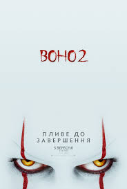
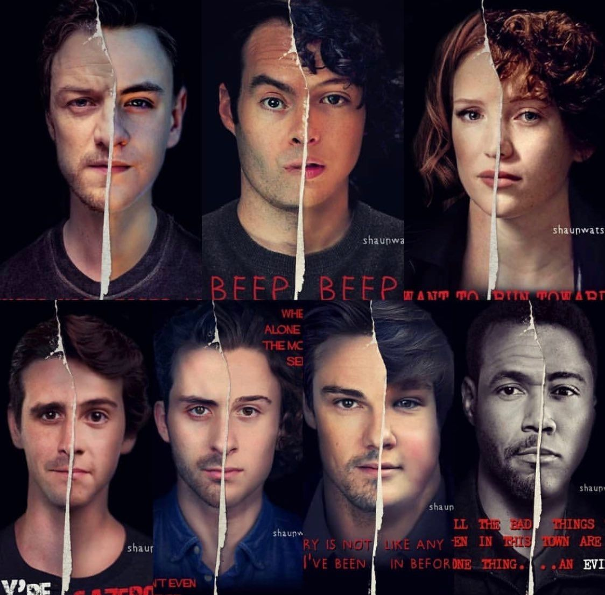

«Воно. Частина друга» (англ. It: Chapter Two) — американський фільм жахів та є сиквелом фільму Воно. Частина перша 2017 року. Обидві частини були адаптовані з однойменного роману 1986 року Стівена Кінга, та зняті режисером Андресом Мускетті. У лютому 2016 року розпочалися переговори про другу частину. 25 вересня 2017 року New Line Cinema та Warner Bros. Pictures оголосили, що продовження вийде у кінопрокат 6 вересня 2019 року. Тоді ж стало відомо, що сценарій писатиме Ґері Доберман, а фільм зніматиме Андрес Мускетті.  Основні зйомки фільму почалися 19 червня 2018 року на базі «Pinewood Toronto Studios» і в локаціях канадської провінції Онтаріо (Порт Хоуп, Ошава, Торонто) та завершено 31 жовтня 2018 року. В Україні планується прем'єра 5 вересня 2019 року.
Фільм "Воно" 2017 року є екранізацією першої частини однойменного роману Стівена Кінга. Він закінчується тимчасовою перемогою членів "Клубу невдах" над загадковим древнім злом, яке набуло форми клоуна Пеннівайза. Але 100-відсоткові хепі-енди для Кінга не характерні, і в продовженні хоррора ми знову потрапляємо в Деррі: 27 років по тому Пеннівайз повернувся, щоб тероризувати містечко. Дорослі та успішні "Невдахи" приїздять в Деррі, щоб раз і назавжди покінчити з кровожерливим клоуном. Але глибокі травми минулого і зміцнілий Пеннівайз затягують їх у вир ще більш жахливих і кривавих пригод. Розповідь у фільмі нелінійна, і крім дорослих Білла (Джеймс Макевой), Беверлі (Джессіка Честейн), Бена (Джей Райан), Річі (Білл Хейдер), Майка (Айзая Мустафа), Едді (Джеймс Ренсон) і Стенлі (Енді Бін), ми бачимо флешбеки за участю улюблених молодих акторів із першої частини.